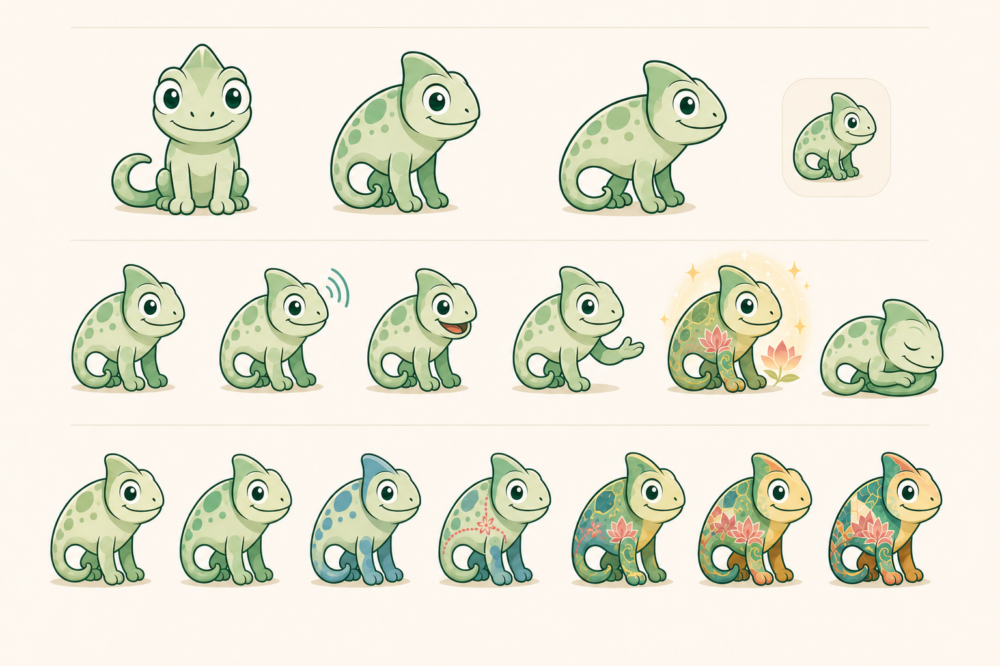
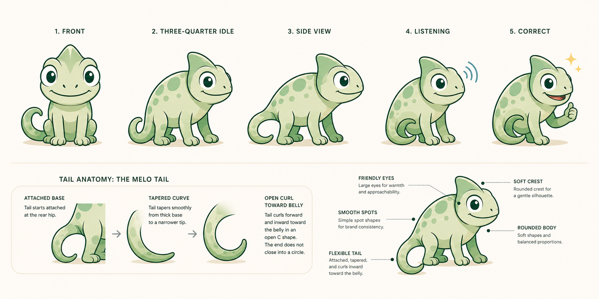
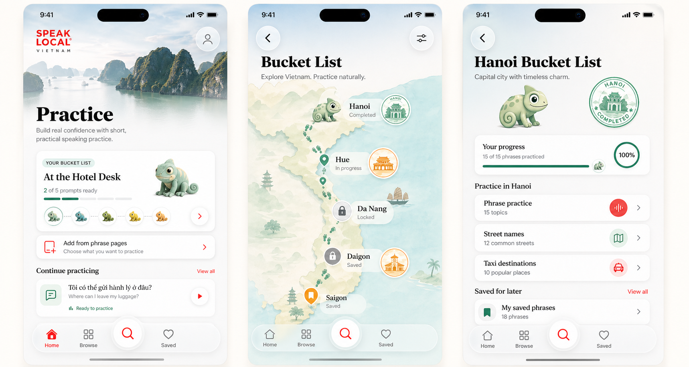
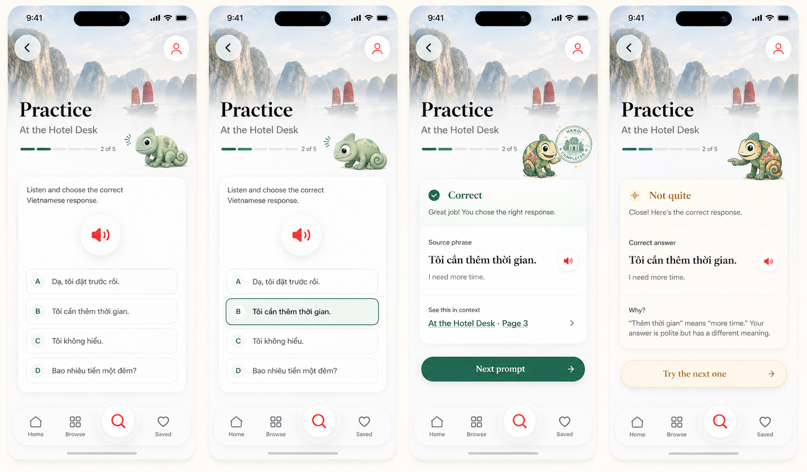
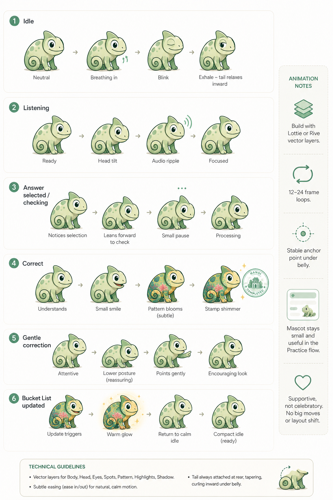

The tail attaches at the rear, tapers, and curls forward under the belly as an open C. No wheel, target, ring, or separate disc shape.
Melo Liquid Glass Quiz Concepts
A tightened concept packet for Speak Local and Speak Local Vietnam. This pass fixes the chameleon tail, moves app screenshots back into the native Liquid Glass visual language, and shows how Melo participates in the actual quiz states without taking over phrase practice.
Brand: Speak Local
App: Speak Local Vietnam
Mascot: Melo
Progress: Bucket List
Surface: Bucket List Map
Tail: open inward curl
Chrome: Liquid Glass
Quiz: phrase-first
Content arrives from content side
Every app comp must include the Speak Local Liquid Glass system: profile/admin button, back button on detail screens, and pinned bottom/search chrome.
Melo reacts to practice moments, but phrase content, audio, and corrections remain primary.

Corrected Tail Contract
Create the production Melo sheet with front, three-quarter, side, and tiny icon sizes; idle, listening, correct, gentle correction, bucket list updated, and rest states; plus a neutral base and six shared unlock stages.
The tail rule is now explicit: attached at the rear hip, tapering, curling inward toward the belly in an open C or hook shape. Avoid full circles, concentric rings, bullseyes, wheels, or separate disc silhouettes.
The production export should use transparent PNG/WebP assets with consistent canvas and anchor point so SwiftUI can swap states without layout jumps.

Commissioning Guardrail
Future prompts should say "open inward chameleon tail curling toward the belly" and explicitly reject "wheel tail," "target tail," "ring tail," "snail shell," and "separate circular disc."
The tiny icon can simplify the tail, but it still needs a tapered open curl rather than a closed circle.

App Screenshot Requirement
Future app screenshots should look like they came from the current SwiftUI app, not generic phone comps. That means a photo masthead fading into white, large editorial type, red audio/action affordances, and Liquid Glass chrome pinned over the content.
Bucket List can sit in Practice, Map, and city detail surfaces, but it should not replace the phrasebook's stable bottom chrome or search island.

Quiz Behavior
Melo listens near the progress strip, leans forward only while an answer is being checked, smiles subtly on correct answers, and points gently during correction. The answer cards, audio button, and source phrase link stay visually dominant.
Sensitive, emergency, medical, or safety contexts should hide Melo or reduce the mascot to a neutral Bucket List mark.

Animation Direction
Use lightweight vector animation for Melo: idle blink/breathing loop, listening head tilt, checking lean, correct color bloom, gentle correction point, and Bucket List updated shimmer.
Recommended implementation path is Rive or Lottie-style layered vectors with a stable bottom-center anchor. SwiftUI swaps state assets only when animation is unavailable.
Native Handoff Model
hidden, idle, listening, checking, selected, correct, gentleCorrection, bucketListUpdated, rest.
base, firstPhrases, cityRhythm, travelerConfidence, streetReady, countryAttuned, fullyUnlocked.
country, city, practiceSet. Street-name packs can attach to city or saved-practice scopes.
locked, inProgress, completed, savedForLater.
country, city, completion date, progression stage, mascot asset key.
Content team supplies phrase pages, street-name pages, and audio rows. The app consumes them.
melo/<countryLayer>/<state>/<stage>/<view>, with square transparent PNG/WebP assets and a stable baseline anchor.
attached rear base, tapered open inward curl, clear gap, no wheel/bullseye/ring/disc silhouette.
Liquid Glass top/back/profile controls and pinned bottom/search chrome in every app screenshot and native handoff comp.
Rive or Lottie-style vector layers, 12-24 frame micro-loops, stable bottom-center anchor, reduced-motion fallback.